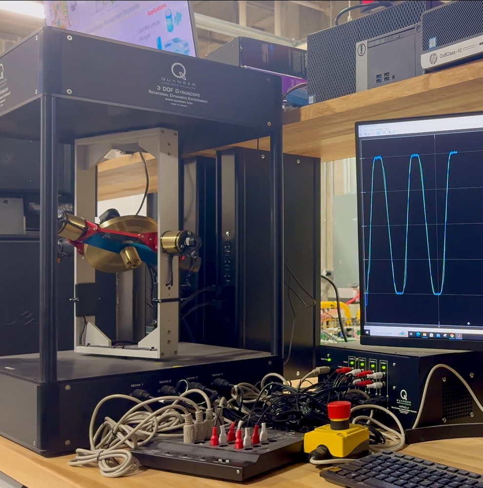
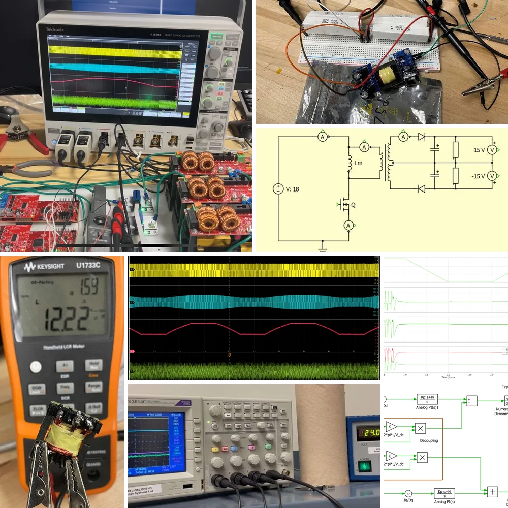

Portfolio
Two bodies of research, each carried from first-principles modeling through analysis and simulation to measured results on physical hardware, and the hands-on course projects that built the toolkit behind them.
-

Real-time control of an underactuated gyroscope
A double-gimbal control moment gyroscope has two motors and an outer frame that no motor touches, so that frame can only be moved through gyroscopic coupling, and certain gimbal angles destroy controllability outright. I built the first real-time control stack reported for this configuration, watched my first controller fail on hardware in a way simulation never showed, and redesigned it around the constraint that broke it.
0.94 s settling, against 3.02 s 0.12° tracking RMS error 500 Hz real-time loop
Read the case study -

A monolithic spring for high-frequency SiC power modules
Press-pack power modules clamp semiconductor dies with stacked steel disc springs that add resistance, inductance, and thermal resistance faster-switching SiC devices cannot tolerate. I replaced the whole stack with a single beryllium-copper block that serves as spring, conductor, and heat path at once, optimized against stress and deflection limits, then built and tested it.
148 µΩ DC resistance, against 856 µΩ 2.8 nH stray inductance 2 published patent applications
Read the case study -

Hands-on projects from graduate coursework
Five course projects that took a design from equations to something that ran: a dual-output flyback converter designed from the magnetics up and qualified on the bench, a permanent-magnet drive emulated with two inverters and closed-loop current control on TI microcontrollers, parallel-robot kinematics and a literature review on a four-axis arm, machine learning notebooks and a proposed whale-identification pipeline alongside a swarm-optimized wireless power link, and a turn-off snubber for a photovoltaic battery charger.
±15 V flyback, built and qualified 12 kHz dq current control on a TI DSP 6 learning models trained
Read the case studies